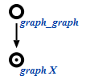
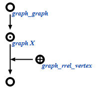
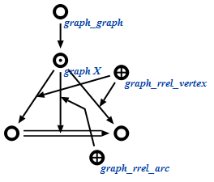

Описнание...
| Системный идентификатор | Пояснение | Русскоязычный идентификатор | Англоязычный идентификатор |
|---|---|---|---|
| graph_graph | Множество всех графов | Граф | Graph |
| graph_rrel_vertex | вершина графа' | graph vertex' | |
| graph_rrel_arc | дуга графа' | graph arc' |
Граф представляется как узел, который с помощью константной, позитивной дуги принадлежности включается во множество всех графов:
Вершина графа задается с помощью ролевого отношения вершина графа':
Луга в графе задается с помощью ролевого отношения дуга графа':
